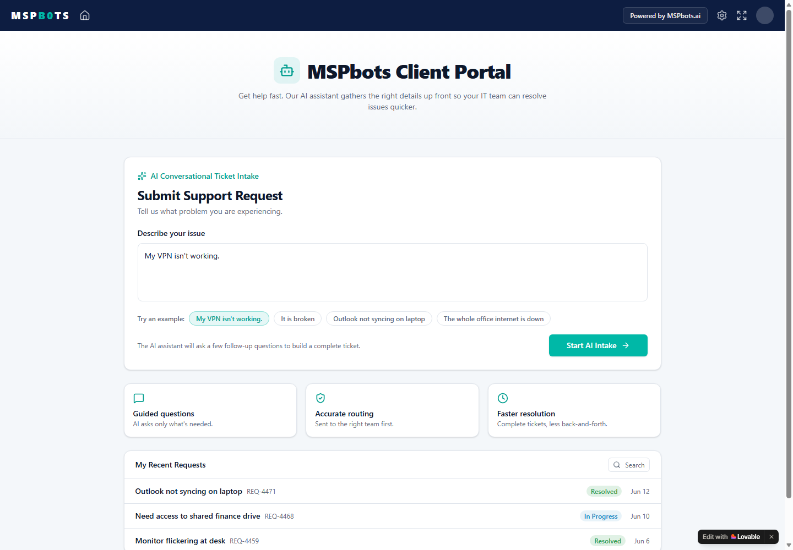
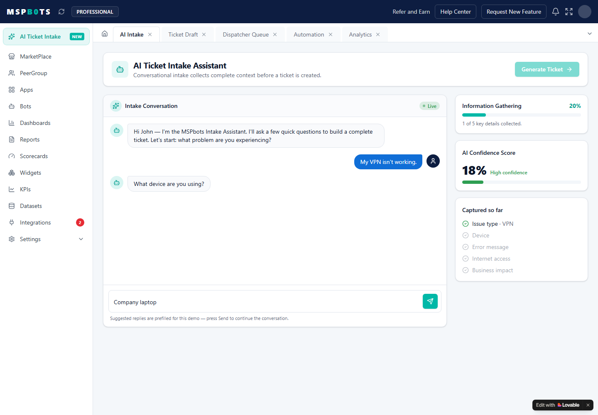
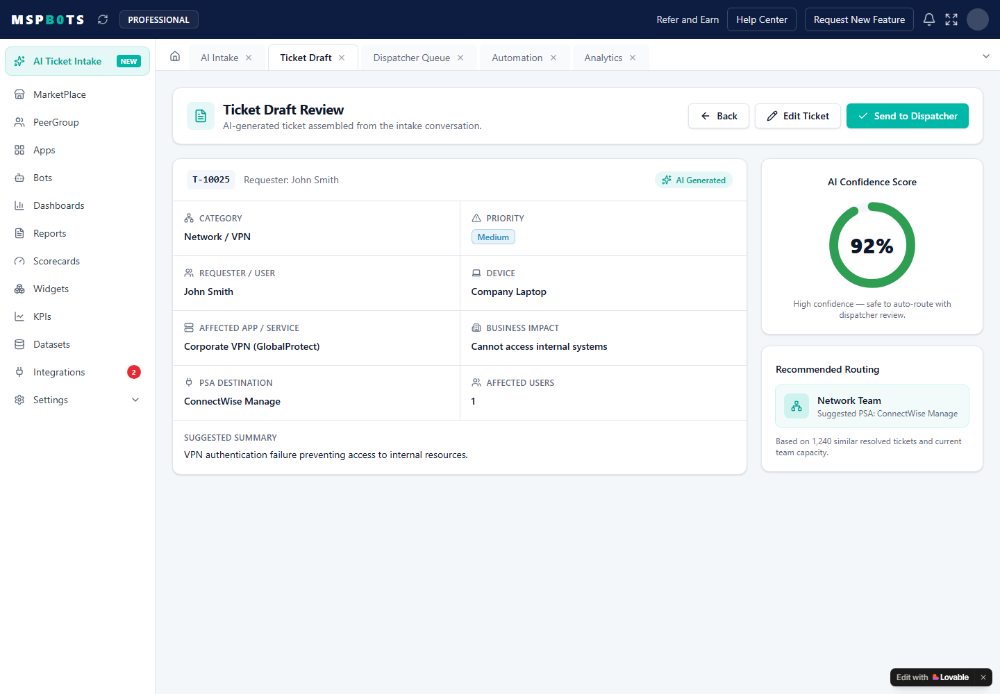
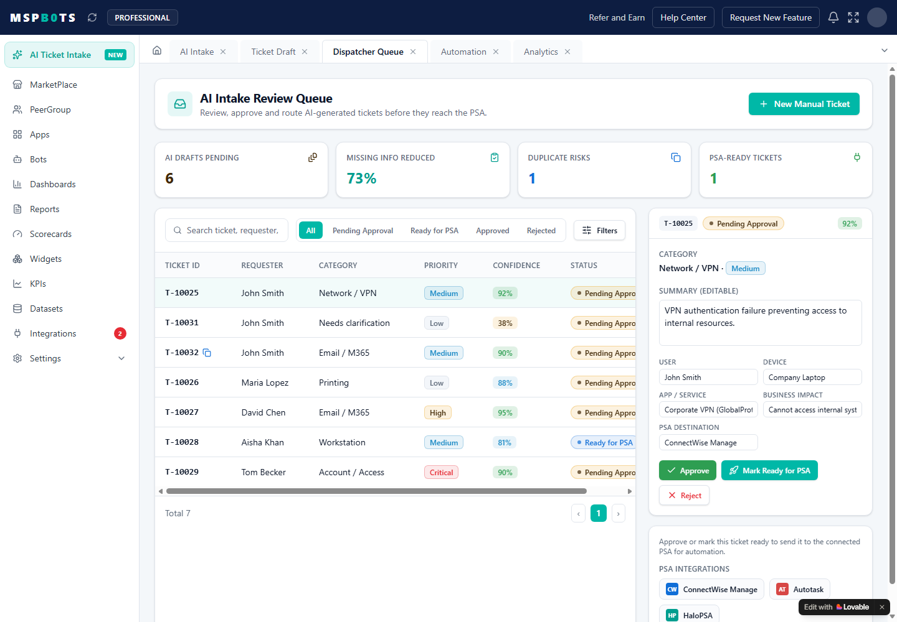
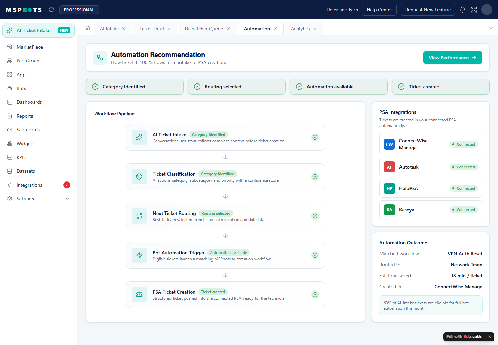
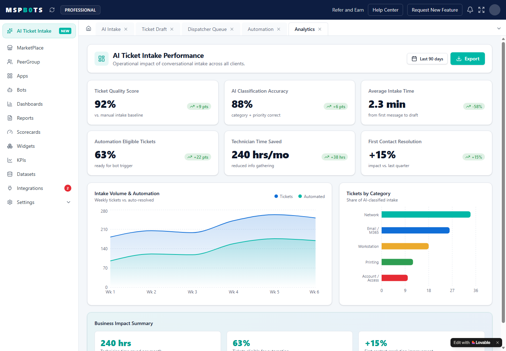

Product Requirements Document (PRD)
Project: AI Conversational Ticket Intake (Pre-Triage Automation)
Author: Emily Fan, AI Product Strategist
Target: Executive Board, Pricing & Commercial Committees, Engineering Leads
Version: 1.1 (Production-Ready Spec with Advanced Visualizations)
Platform Ecosystem Context: Native Integration within the MSPbots.ai Core Platform
1. Executive Summary
1.1 Problem Statement
Managed Service Providers (MSPs) operate on fixed-fee Managed Service Agreements (MSAs). Under this model, their single greatest margin drain is helpdesk triage latency and technician labor waste. Support tickets routinely arrive with vague, unstructured end-user text (e.g., "My computer is slow," "The internet is broken"). Currently, human dispatchers and high-cost Tier 2/3 engineers spend up to of their billable day playing email/phone tag to collect basic context (such as hardware asset tags, error codes, and scope). This "triage bottleneck" causes tickets to sit un-enriched in dispatch queues, leading to missed SLA response windows, routing failures, and the manual bypass of automated routing rules.
1.2 The Opportunity & Proposed Solution
MSPbots is uniquely positioned to solve this problem by deploying an AI Conversational Ticket Intake engine—operating not as a generic standalone chatbot, but as an integrated Pre-Triage Automation Layer within our existing platform. By intercepting unstructured requests at the point of ingestion (portal, email, or chat) and engaging users in a rapid, dynamic clarification loop, the system automatically extracts, standardizes, and validates ticket metadata.
This clean data is written directly to the MSP's PSA (ConnectWise, Autotask, or Halo), immediately feeding downstream MSPbots assets—such as the Next Ticket routing engine and Automated Bot Alert Loops—to enable instant, zero-touch dispatching.
Unstructured Input
Messy portal chats, vague support emails, incomplete forms
MSPbots Ingestion Engine
AI context enrichment, metadata validation, schema-constrained field suggestions
Downstream Platform Impact
Clean PSA data feeds Next Ticket routing, KPI engines, and automated alert bots
1.3 Target Customer & Value Realization
We target Process-Driven Mid-Market MSPs (6–25 Technicians). They possess the required process maturity (configured category trees and triage roles) to value data hygiene but are severely bottlenecked by manual front-door processing.
1.4 Core Product Success Metrics
The product's performance is anchored on the Platform North Star Metric: Platform Triage Automation Yield (), representing the total hours recovered across an MSP due to the elimination of manual downstream triage, routing exception handling, and diagnostic discovery. Our V1 target is to recover per month for a typical mid-market partner.
2. Customer Segmentation & Personas
MSPs scale through operational standardization. We segment the market based on their internal queue management capabilities and database hygiene to identify where our product delivers immediate, high-value ROI.
2.1 MSP Market Segmentation Matrix
| Segment | Team Size & Endpoints | Queue Management Maturity | PSA Database Hygiene | Intake Bottleneck Profile |
|---|---|---|---|---|
| Segment A: The Reactive Shop | • 1–5 Technicians • Under 1,000 endpoints | • No dedicated dispatcher. • Technicians "cherry-pick" tickets directly from a shared inbox. • High dependency on phone/ad-hoc chat. | • Flat, unstructured ticketing configurations. • Fields are left blank or marked as "General IT Support." | • Technicians waste hours troubleshooting basic issues without context, leading to service delivery delays and high customer churn. |
| Segment B: The Process-Driven Tier (V1 Core Target) | • 6–25 Technicians • 1,000–5,000 endpoints | • Dedicated or fractional dispatcher/triage lead. • Structured Service Desk workflows with loosely defined SLAs. | • Configured Service Trees (). • High frustration with bad data entry that breaks routing. | • The Triage Chokepoint: The dispatcher spends hours manually reading vague emails and chasing users for baseline asset details, causing queue backlogs and SLA breaches. |
| Segment C: The Enterprise Operations Center | • 26+ Technicians / Dedicated NOC • 5,000+ endpoints | • Full Triage Teams. • Advanced automated routing matrices (such as MSPbots Next Ticket) drive the service desk. | • Rigidly audited, highly customized PSA environment. • Strict compliance, data validation, and exact SLA alerting requirements. | • Unstructured inputs cause automated routing rules to fail, dumping clean-up tasks into expensive manual exception queues. |
2.2 Primary Personas (Core Direct Users)
Sarah - Service Desk Coordinator / Triage Lead
Manages the incoming daily ticket firehose for a 15-person technician team. Owns queue hygiene, initial categorization, and ticket assignment.
Keep triage under 5 minutes per ticket, improve first-pass classification accuracy, and reduce repeated follow-up emails for baseline context.
Poorly worded tickets, technician complaints about missing data, and constant interruptions that break operational focus.
Fewer manual clicks per ticket, higher AI draft acceptance, and cleaner first-pass categorization.
Alex - Client End User
A non-technical employee at an MSP client company who needs technology working so they can complete daily work.
Submit an IT issue quickly without navigating complex portals, category trees, or long forms.
Technical questions they do not understand, slow confirmation loops, and uncertainty about whether the request was received.
Low-friction issue submission with a clear conversational feedback loop and a structured request created behind the scenes.
2.3 Secondary Personas (System Stakeholders & Benefactors)
Persona 3: The Downstream Executor (Dave, Senior Systems Engineer - Tier 2/3 Helpdesk)
Role & Profile: The high-cost, senior technical resource responsible for executing complex network, server, and infrastructure remediations.
Core Goals: Open an assigned ticket and instantly find all the diagnostic telemetry, business context, and asset histories required to fix the issue on the first attempt.
Core Frustrations: Receiving a critical escalation ticket that reads "Server broken," only to find out after 30 minutes of diagnostic discovery that the user just needed a local password reset.
Success Metrics:
reduction due to elimination of diagnostic data gaps.
(tickets sent back to triage due to incomplete information).
Persona 4: The Business Owner (Jason, MSP Chief Executive / Founder)
Role & Profile: Executive owner focused on maximizing operational efficiency, managing payroll costs, scaling client endpoints without expanding headcount, and increasing Annual Recurring Revenue (ARR).
Core Goals: Optimize technician utilization rates, safeguard gross margin on flat-fee managed service agreements, and protect client retention.
Core Frustrations: Having to hire additional overhead staff just to read emails and organize queues; losing client contracts due to breached SLA agreements caused by triage chokepoints.
Success Metrics:
growth capability without adding headcount.
expansion through automated operational triage efficiency.
3. Problem Statement & Opportunity
3.1 Need Gap Analysis (NGA)
| Current Operational State (Vague Ingress) | Ideal Target State (Pre-Triage Automation) | Downstream Strategic Impact |
|---|---|---|
| Support tickets arrive with highly vague, unstructured text (e.g., "Computer won't load"). | Tickets are enriched and categorized automatically before routing. | Eliminates manual dispatcher administrative triage overhead. |
| The dispatcher (Sarah) spends 10–15 minutes manually chasing users for device context. | Crucial context is collected at the edge via adaptive AI conversations. | Accelerates Time-to-Triage and prevents queue backlog buildup. |
| Tier 2/3 engineers waste billable hours performing basic diagnostic discovery. | Engineers troubleshoot immediately using clean, structured metadata. | Drives service desk gross margin expansion and engineer utilization. |
| Automated routing rules (e.g., Next Ticket) throw exceptions on blank fields. | Complete schemas enable immediate, touchless ticket assignment. | Maximizes the automation yield of existing MSPbots investments. |
| The SLA response clock starts running while tickets sit un-enriched. | SLAs run with actionable, routing-ready data, protecting response times. | Protects client retention and prevents contractual SLA penalty breaches. |
3.2 Core Motivations: The Avoidance-to-Approach Shift
MSPs are highly risk-averse operational environments. To drive high-velocity adoption, our GTM strategy and product positioning leverage an Avoidance Approach behavioral framework:
Avoidance Drivers (Pain Relief): Stop helpdesk dispatcher bottlenecks, prevent costly SLA response breaches, eliminate diagnostic data-gathering delay cycles, and reduce senior technician labor waste on low-value sorting tasks.
Approach Drivers (Gain Capture): Expand team operational capacity (endpoints managed per technician) without adding headcount, maximize billable resource utilization ratios, protect flat-fee contract gross margins, and increase overall service desk throughput.
4. Product Requirements (Core PRD)
4.1 Product Vision & Core Guiding Principles
The development, design, and deployment of this feature are strictly governed by three core platform principles:
AI Assists, Not Auto-Resolves: The AI's purpose is to categorize, enrich, and collect information. The final write to the PSA is validated by the Service Desk Coordinator to maintain absolute system control and trust.
Improve Quality Before Speed: We prioritize gathering complete, clean metadata (such as asset tags, reboot status, and error codes) at intake rather than rushing unverified, empty tickets to the active queue.
Trust Over Automation: If the system is uncertain (low classification confidence), it defaults to clear explanation logs and immediate human routing instead of guessing and corrupting downstream routing.
4.2 Top 5 V1 Scenarios & Enrichment Strategies
Applying a Composite Priority Index ()—where —we have selected the five highest-yield scenarios for the V1 release, incorporating our core product principles:
"I can't open our files from my laptop at home."
AI asks user to identify their home Wi-Fi connectivity status, the exact error displayed in the VPN client (e.g., FortiClient, AnyConnect), and if they can load general public websites.
Category: Network Security | Subcategory: VPN Connection | Target Asset ID: Verified Company Device | Local Connection Status: Active | Error String: TLS Handshake Timeout (98).
If user reports "No internet access at all," AI stops VPN questioning, categorizes as Local Internet Issue, and directs user to check their physical router.
"My computer keeps freezing up."
AI prompts for the physical Asset ID tag on the device, asks if the slowness occurs with specific applications (e.g., CAD, Excel), and checks the device's system uptime/reboot status.
Category: Hardware | Subcategory: Workstation Performance | Asset ID: ASSET-4822 | System Uptime: 14 Days Since Reboot | Scope: Local OS Freezing.
Prioritize data quality. If the device has not been restarted in , the AI prompts: "I see this workstation hasn't been restarted in 14 days. Would you like to try restarting now to see if it clears the freeze?" The reboot status is logged in the draft for Dave (technician).
"The printer on the second floor is broken."
AI identifies the user's office location, prompts for the printer label/model (e.g., PRN-BOS-2F-HP), asks if other employees are experiencing the issue, and checks for physical warning lights or error codes.
Category: Peripherals | Subcategory: Network Printing | Target Asset: PRN-BOS-2F-HP | Impact Scope: Single User vs. Department-Wide | Error Status: Paper Jam / Offline.
AI does not attempt to send remote printer reset commands. It merely structures the physical context for Sarah to approve and dispatch.
"We have a new hire starting next week. Need an account set up."
AI prompts the submitting manager for essential structured parameters: full legal name, department, specific job title, start date, required hardware profile, and target application group permissions.
Category: User Management | Subcategory: New Hire Provisioning | Full Name: John Doe | Start Date: 2026-06-22 | Department: Marketing | Hardware Requested: Standard Laptop.
This scenario requires structured form compliance. The AI converts conversational text into a validated schema. If key parameters (e.g., Start Date) are missing, the ticket is explicitly flagged as [Incomplete Ingress] for human review.
"QuickBooks is acting up."
AI queries the user to check if they are accessing the system locally or over RDS/Citrix, asks for the exact error dialogue pop-up text, and prompts to check if their immediate colleagues are also locked out.
Category: Software | Subcategory: QuickBooks / Finance App | Launch Method: Citrix Terminal | Scope: Department-wide Access Failure | Error Code: Database Connection Timed Out.
If user indicates "No one in the accounting department can log in," the AI bypasses standard troubleshooting, escalates the ticket urgency to High, and routes it directly to Sarah with the tag [EMERGENCY BYPASS].
5. Prioritized Functional Requirements Matrix
| ID | Module / Feature | Priority | Functional Requirement Specification | AI-Assisted vs. Deterministic Boundary |
|---|---|---|---|---|
| FR-1.1 | Multi-Channel Context Extraction | P0 | System must ingest unstructured text from Web Chat Portal and Email, identifying core user intent and mapping parameters to the MSP's custom PSA category tree. | AI-Assisted: Natural Language Processing (NLP) parses unstructured text to propose Category, Subcategory, Urgency, and Priority tags. |
| FR-1.2 | Dynamic Context Enrichment Loop | P0 | If core required fields are missing or model classification confidence falls below a set threshold (), trigger conversational follow-up questions to collect missing variables. | AI-Assisted: Large Language Model (LLM) dynamically structures conversational clarification prompts. Limit loop to maximum 3 turns to prevent user fatigue. |
| FR-1.3 | Descriptive Title & Summary Gen | P0 | Generate short, descriptive ticket titles replacing generic headers (e.g., converting "Help please" to "VPN Authentication Failure (ASSET-4822)"). | AI-Assisted: Model generates dynamic summary titles optimized for technical queues. |
| FR-1.4 | PSA Live Duplicate Scanner | P0 | Scan current open company tickets in the PSA database to detect potential duplicates. Alert user and offer to append their name to the existing parent ticket. | Deterministic: Database query checks company-wide records for matching active service tags, bypassing conversational loop if a match is found. |
| FR-1.5 | Human-in-the-Loop Review Console | P0 | Provide a visual draft review interface for the Service Desk Coordinator (Sarah) displaying the raw input, chat history, and proposed AI metadata fields with an "Explainability Log." | Deterministic: Sarah has full editing rights over all dropdown fields. Single-click "Approve" button triggers the POST request to the PSA. |
| FR-1.6 | Human Override Feedback Logging | P0 | Intercept and log any manual corrections Sarah makes to AI-proposed fields. Save original input, rejected AI tags, and approved manual overrides in a training dataset. | Deterministic: Event-listener records field changes on approval click and writes to local database for model fine-tuning loops. |
| FR-1.7 | Spam & Non-IT Auto-Reject Filter | P1 | Identify and flag non-IT requests, marketing spam, or abusive messages (e.g., "Order lunch" or "Clean desk") to prevent automated queue spamming. | AI-Assisted: Sentiment and context filtering blocks anomalous tickets from entering the active review queue. |
| FR-1.8 | Dynamic PSA Schema Mapping | P1 | Fetch the MSP's custom ConnectWise/Autotask category schema via nightly API sync to restrict AI classification outputs. | Deterministic: System uses schema constraints to restrict model outputs, preventing hallucinatory categories. |
6. User Flows & System Architecture
6.1 End-to-End System & User Flow
The operational journey of an inbound IT request, from initial end-user submission to structured PSA ticket creation, is mapped in the system flow below:
6.2 Alternate Paths & Exception Handling
The intake engine is designed to enrich context, prevent bad automation writes, and escalate safely when AI confidence is not enough.
When the end user bypasses the portal and sends a direct support email, AI still extracts the best available metadata and creates a draft instead of forcing a new channel.
- High-confidence emails move directly to draft review.
- Incomplete emails receive a concise follow-up with up to 3 direct questions.
- No response moves the draft to Sarah as Awaiting User Context.
When confidence is high, the system checks for a matching user, asset, category, and recent time window before creating another PSA ticket.
- Warns Sarah before ticket creation.
- Shows the likely duplicate ticket reference.
- Lets Sarah merge, link, or approve as a separate issue.
If the issue remains vague and confidence is low, the AI avoids confident categorization and routes the item for human review.
- Asks one broad clarification question.
- Uses a generic Needs Review category if still unclear.
- Preserves the explainability trail for dispatcher trust.
The intake flow stops after the allowed clarification window and produces the best safe draft rather than trapping the user in a long conversation.
- Caps clarification at 3 turns.
- Tags the draft as Enrichment Incomplete.
- Moves the decision to Sarah's review queue.
For office-wide outages, ransomware-like language, or critical business interruption, AI bypasses normal clarification and routes immediately.
- Assigns emergency severity for human validation.
- Triggers priority alerting instead of normal intake pacing.
- Keeps downstream routing ready for PSA and MSPbots automation.
7. Solution Design & Prototyping Blueprint
To ensure rapid, seamless adoption inside the live MSPbots environment, our prototype mimics the platform's distinct design language—including the left navigation menu, dark blue top navbar, teal primary action buttons, card structures, and table-heavy admin layouts.
7.1 Multi-Screen Prototyping Journey
These screenshots were captured from the live Lovable prototype routes and map to the PRD's six-screen journey.

Client Portal Ingestion
Matches the existing MSPbots Client Portal interface with a simple, clean support request card.
User enters unstructured text such as "My VPN is not working" and clicks the teal Start AI Intake button.

Conversational Clarification UI
Embedded chat window with a visible progress indicator for Information Gathering.
The 3-turn question flow captures responses such as "Company laptop" and "Authentication failed" while updating extracted parameters in the right-hand panel. User clicks Generate Ticket.

AI-Proposed Ticket Draft
Two-panel comparison view: raw chat history on the left and a structured metadata draft card on the right.
Displays proposed Category, Subcategory, Priority, and Asset ID. The explainability banner shows why the issue was classified as VPN Connection, with Edit Ticket and Approve Ticket controls.

Dispatcher Review Queue (Sarah's Portal)
Standard MSPbots administrative grid with sortable rows, search, and queue-oriented review controls.
Sarah reviews live enriched drafts. Clicking Approve executes the PSA-ready action and confirms successful ticket creation.

Automation & Routing Status
Visual node-based workflow map demonstrating platform integration.
Shows the newly created ticket flowing into MSPbots modules and downstream routing.
- AI Ticket Ingestion: Passed
- Next Ticket Engine: Matched and routed to Network Team
- Alert Bot Engine: Fired priority webhook to Slack

Performance KPI Dashboard
Out-of-the-box MSPbots BI dashboard widget template.
Displays operational gains for the MSP owner, including dispatcher hours saved, first-pass completeness rate, and SLA response margin lift.
- Dispatcher Hours Saved: based on manual triage time avoided
- First-Pass Completeness Rate: shows improved structured-data density
- SLA Response Margin Lift: charts response compliance improvement
8. Success Metrics Framework
8.1 Platform North Star Metric
Platform Triage Automation Yield ()
Definition: The total estimated operational hours saved across an MSP organization per month due to AI ticket context enrichment, metadata validation, and the elimination of manual downstream triage, routing, and diagnostic discovery.
Formula: Let be the total number of incoming tickets processed by the AI Ingestion Engine. Let be the historical average time (in hours) a Service Desk Coordinator spends manually triaging and assigning a raw ticket. Let be the average time spent when utilizing the AI-Enriched draft review interface. Let be the historical average time a technician spends on post-dispatch diagnostic follow-ups due to incomplete data, and be the average technician diagnostic discovery time when a ticket is dispatched with complete AI-enriched metadata.
Why It Matters: This metric ties the AI intake feature directly to operational cost-savings and business profitability. It proves that the tool is not just an interface convenience but a core operational efficiency multiplier.
How to Measure: Tracked via our existing Dataset Engine, capturing time delta timestamps between ticket ingress, draft review approval click, and PSA technician status changes.
Suggested V1 Target: saved per month for a typical mid-market partner.
8.2 Comprehensive Metrics Matrix
| Metric Category | Metric Name & Formula | Why It Matters | How We Measure It | V1 Target |
|---|---|---|---|---|
| Product Success | First-Pass Triage Velocity (): | Validates whether the AI-proposed drafts actually accelerate Sarah's triage processing speeds or if they introduce cognitive friction. | Logged directly by the MSPbots web application database as drafts are validated. | (down from manual baseline of 8-12 minutes). |
| Product Success | AI Draft Acceptance Rate (): | Direct metric for model trust. Low acceptance indicates hallucination, poor classification tuning, or PSA schema mismatch. | Monitored via the override event hooks in the dispatcher's draft preview screen. | (meaning of drafts require manual correction). |
| Operational | Average Dispatcher Clicks (): | Quantifies UI friction. Our goal is to reduce Sarah's workflow to a single-click "Review & Approve" motion. | Tracked via frontend interaction telemetry (Amplitude/Hotjar integrations in the console). | per ticket (baseline manual dispatch is clicks). |
| Operational | Inbound Incomplete Resolution (): | Tracks the system's ability to extract high-quality diagnostic data at the edge before tickets hit the active queue. | Calculated by comparing the initial intake confidence score with the final metadata payload sent to the PSA. | of vague tickets successfully enriched. |
| Ticket Quality | Intake Data Completeness (): | Clean data is the prerequisite for all downstream MSPbots automation. Higher completeness prevents diagnostic data gaps. | Audited using ConnectWise/Autotask database synchronization schemas. | across all AI-processed tickets. |
| Ticket Quality | Escalation Bounce Rate (): | A high bounce rate indicates that while tickets are processed quickly, the quality of diagnostic context was poor. | Tracked via historical ticket status change logs ("Assigned" "Triage Queue") in the PSA. | (industry standard is typically ). |
| Platform Ecosystem | Next Ticket Ingestion Compatibility (): | Proves ecosystem integration. Complete data allows Next Ticket rules to route instantly without manual exceptions. | Tracked via Next Ticket processing execution logs within the MSPbots core application database. | . |
| Platform Ecosystem | Intake-Triggered Bot Dispatch Rate (): | Connects the intake engine to the real-time alerting platform, ensuring immediate alert trigger responses. | Calculated by joining AI intake submission timestamps with MSPbots Bot Engine transaction tables. | on all priority-escalated tickets. |
| Customer Outcome | SLA Initial Response Margin Lift (): | Primary business outcome metric that MSP owners track to evaluate vendor performance and prevent client churn. | Pulled from the MSP's standard SLA reporting database via ConnectWise/Autotask API sync. | percentage-point improvement in SLA compliance. |
8.3 Platform Action Matrix
A. Inside MSPbots Dashboards (Dispatcher Efficiency Dashboard)
We will introduce a new out-of-the-box "AI Intake Analytics" template into our dashboard catalog. It will display the Triage Velocity Tracker comparing Sarah's manual triage duration () with her AI-assisted triage duration (), alongside the Data Completeness Index () gauge.
B. New Standard KPIs (KPI Engine Integration)
The platform will write kpi_ai_draft_acceptance_rate and kpi_triage_processing_clicks directly into the core platform schema. This allows managers to select and track these custom metrics across any standard bot or report.
C. Future AI Optimization Loops (Continuous Feedback System)
Every time Sarah corrects a field (e.g., changing Category from Network to Peripherals), the platform packages the event details into a local JSON override log. These logs are written to our platform dataset and ingested monthly into our local fine-tuning pipeline, automatically calibrating classification prompts.
D. Customer-Facing Reports
To prove ROI to the end clients of our partner MSPs, the platform will render a Triage Speed Report directly inside the Client Portal module (e.g., showing: "Thanks to our AI front door, your average ticket processing time has dropped from 10 minutes to 38 seconds").
9. Risks, Assumptions, & Mitigations
Risk 1: Schema Deviation & Prompt Hallucinations
The Risk: Mid-market MSPs routinely customize their ConnectWise/Autotask Service Trees (adding hyper-specific local subcategories). If the AI model tries to map categories using a standard schema, it will create API sync failures and drop tickets.
The Mitigation: Do not use hardcoded schemas in the model prompt. Establish a nightly automated API metadata synchronization cron-job that updates the local validation schema. The model's output schema is dynamically restricted using JSON schema constraint boundaries matching the MSP’s custom API configuration parameters.
Risk 2: Client Portal Silent Dropout & User Fatigue
The Risk: If end-users find the interactive clarification loops too verbose, slow, or technical, they will abandon the portal and call the phone queue, increasing manual helpdesk overhead.
The Mitigation: Set a strict limit of 3 turns on conversational clarification questions. If the required metadata is not captured in 3 turns, stop prompting, generate the ticket draft with the best available data, tag it [Enrichment Incomplete], and push it to Sarah’s queue immediately to prevent intake friction.
Risk 3: Model Trust Erosion
The Risk: Early classification anomalies or false duplicate alerts can cause Sarah to lose trust in the AI recommendations, leading her to bypass the tool entirely.
The Mitigation: Implement an "Explainability Log" on the review card showing exactly which keywords triggered the category choice. Give the dispatcher absolute single-click manual override control over all fields before the ticket is written to the PSA.
10. Rollout & Pilot Program Design
To protect platform reputation and validate technical stability, we reject broad, unconstrained rollouts. We design a focused 30-day Sandbox Pilot Program.
10.1 Pilot Cohort Specifications
Size: highly qualified, active Segment B mid-market MSPs.
Core Prerequisites: Active ConnectWise, Autotask, or HaloPSA integration; dedicated helpdesk dispatcher role; minimum ticket volume of tickets per month; and active MSPbots dashboard utilization.
10.2 Success Gateways & Exit Criteria
To progress the feature from private pilot to public beta, the pilot cohort must satisfy four quantitative operational thresholds over a continuous 30-day monitoring window:
Triage Effort Reduction: average reduction in manual clicks and triage processing times for the dispatcher (Sarah).
Ingress Completeness Rate: percentage-point improvement in baseline data completeness scores.
Customer Satisfaction Retention: Post-conversation end-user CSAT rating .
Integration System Trust: Zero data corruption instances or unsynchronized database schema errors.
10.3 3-Phase Commercial Release Schedule
[Phase 1: Private Pilot] ────────► [Phase 2: Public Beta] ────────► [Phase 3: General Availability] • 10-15 selected MSPs • Open inside Marketplace • Full commercialization • 30-day sandbox evaluation • 14-day free trial limit • Consumption billing active
Phase 1: Private Pilot (Weeks 1–4): Restrict deployments to the sandbox cohort. Establish baseline performance and eliminate API synchronization errors.
Phase 2: Public Beta / Soft Launch (Weeks 5–8): Make the app available in the MSPbots Marketplace. Offer an automated 14-day or 200-ticket Free Trial triggered directly when standard platform dashboards detect high unassigned queues or initial response SLA latency.
Phase 3: General Availability (Week 9+): Complete feature launch. Transition to the hybrid pricing model, supported by targeted marketing campaigns across major MSP networking groups (e.g., IT Nation).
11. Product Decision Log
This section documents the architectural, commercial, and operational tradeoffs made during the design of the V1 AI Conversational Ticket Intake engine, anchoring our product strategy on four core strategic bets.
11.1 The Four Strategic Bets
Bet #1: Ticket Quality Over Auto-Resolution: The most expensive helpdesk bottleneck is diagnostic latency, not the mechanical execution of an IT fix. We prioritize upstream context enrichment over high-risk, fully automated resolution scripts.
Bet #2: Pre-Triage Automation Over Generic Chatbots: MSP owners are highly skeptical of generic "AI wrappers." Positioning this product as a specialized operational throughput class—Pre-Triage Automation—reconciles the value proposition directly with service desk gross margin protection.
Bet #3: Embedded Ecosystem Play Over Standalone Utility: The commercial defensibility of MSPbots lies in its integrated platform. By embedding the intake engine directly into our existing database schemas, we allow clean data to flow natively into Next Ticket routing, standard KPI dashboards, and automated alert loops.
Bet #4: Usage-Based Credit Monetization Over Standalone Flat Licences: Leveraging our existing platform-wide AI Credit Billing model eliminates initial procurement friction, aligns billing directly with customer-extracted transactional value, and creates an organic upgrade path into higher-value subscription tiers.
11.2 Tradeoffs & Rationales Matrix
| # | Decision Topic | Core Decision | Alternatives Considered | Tradeoffs & Rationale Accepted | Live Platform Alignment |
|---|---|---|---|---|---|
| 1 | Problem Focus | Focus on ticket intake quality and upstream context enrichment rather than automatic IT resolution. | • Option A: Fully autonomous ticket auto-resolution. • Option B: Upstream context enrichment (Selected). | • Tradeoff: Lower initial "automation-hype" marketing appeal. • Rationale: 30% to 50% of incoming tickets arrive incomplete. Resolving data gaps at ingestion prevents downstream engineer diagnostic waste and protects system trust. | Feeds structured, routing-ready data directly into the Next Ticket engine. |
| 2 | Target Customer Segment | Focus the V1 release strictly on Segment B (Process-Driven Mid-Market MSPs). | • Option A: Reactive Small Shops ( techs). • Option B: Large Enterprise Operations ( techs). | • Tradeoff: Excludes high-volume enterprise buyers and high-velocity small-tier accounts. • Rationale: Segment B has configured category trees and dedicated dispatchers, making operational ROI and triage click-reductions immediately measurable. | Matches existing Automated Client Mapping and team structures. |
| 3 | Product Positioning | Establish a new strategic category: Pre-Triage Automation. | • Option A: AI Helpdesk Chatbot. • Option B: Virtual Service Desk Assistant. • Option C: Pre-Triage Automation (Selected). | • Tradeoff: Requires market education compared to familiar "chatbot" terms. • Rationale: Neutralizes commoditized competition. Shifting positioning to "Pre-Triage" focuses the sale on service desk throughput and margin protection. | Aligns with existing MSPbots Marketplace operational products. |
| 4 | Deployment Architecture | Deploy as an embedded, native capability within the existing console rather than a standalone app. | • Option A: Build a standalone, isolated SaaS module. • Option B: Fully embed within the platform ecosystem (Selected). | • Tradeoff: Ties product development velocity to core platform release dependencies. • Rationale: Reduces customer onboarding friction to zero by utilizing pre-configured integrations, user permissions, and billing systems. | Leverages existing Client Portal, Public APIs, and database structures. |
| 5 | Primary Entry Point | Target client conversational ingestion interfaces (web chat, email hooks, portals) as the primary ingestion vector. | • Option A: Technician-facing console UI. • Option B: Manager analytics dashboards. • Option C: End-user intake workflows (Selected). | • Tradeoff: Demands a highly simplified, non-technical UI to avoid end-user portal abandonment. • Rationale: Data quality must be resolved at the point of origin. Enriching tickets at ingestion provides maximum downstream leverage. | Embeds directly into existing Client Portal and website chat widgets. |
| 6 | Monetization Model | Utilize a Hybrid Model fueled by consumption-based AI Credits rather than a flat per-user fee. | • Option A: Standalone flat-rate monthly add-on fee. • Option B: Per-seat / Per-agent licensing models. • Option C: Consumption credit billing (Selected). | • Tradeoff: Monthly revenue fluctuates slightly based on client transaction volume. • Rationale: Lowers initial buying barriers to zero. Aligns pricing directly with the transactional value and ticket volumes processed. | Integrates natively with the platform's active AI Console Credit Billing. |
| 7 | Revenue Expansion | Drive core platform subscription plan upgrades using credit usage limits as the primary growth loop. | • Option A: Charge only for raw credit overages. • Option B: Restrict feature availability to premium-only plans. • Option C: Hybrid plan tier upgrades (Selected). | • Tradeoff: Requires continuous monitoring of account consumption boundaries. • Rationale: As clients process more tickets, upgrading platform tiers (e.g., Starter Growth) becomes more cost-effective, expanding core ARR. | Leverages standard platform subscription frameworks (Growth, Scale, Enterprise). |
| 8 | Success Metrics Focus | Measure operational outcome KPIs (SLA response lift, dispatcher clicks) over technical model performance. | • Option A: Technical AI metrics (tokens, prompts, latency). • Option B: Operational and business outcome KPIs (Selected). | • Tradeoff: Requires complex backend event-timestamp and API integration tracking. • Rationale: MSP owners do not buy raw AI performance; they buy operational capacity, dispatcher hours recovered, and SLA safety. | Surfaces metrics directly inside standard MSPbots BI Dashboards and Reports. |
| 9 | Rollout Strategy | Execute a highly restricted, controlled Pilot Program ( MSPs) with strict exit metrics. | • Option A: Immediate General Availability (GA) marketplace launch. • Option B: Controlled, metric-gated pilot rollout (Selected). | • Tradeoff: Delays global marketing and commercialization velocity by 60 days. • Rationale: MSPs are highly risk-averse. Validating technical stability, schema parsing, and CSAT in a sandbox protects platform reputation. | Promoted through targeted in-app alerts inside the Onboarding Workflows console. |
| 10 | Prototype Scope | Build a prototype focused strictly on the end-to-end interactive intake-to-review loop. | • Option A: Replicate the entire MSPbots platform dashboard shell. • Option B: Focus strictly on the core, high-value user flows (Selected). | • Tradeoff: Excludes secondary screens (billing UI, role configuration, reports). • Rationale: Proves the core value proposition—how an incomplete input is transformed into structured PSA metadata. | Demonstrates immediate compatibility with downstream Next Ticket rules. |
12. AI Usage Notes
We used artificial intelligence as deep operational leverage to accelerate strategy, structural modeling, and technical prototyping, while keeping human product judgment in complete control of commercial decisions.
Where AI Accelerated the Product Lifecycle
Visual Prototyping & "Vibe Coding": We utilized visual LLMs (Lovable and Cursor) to construct a fully functional web application mockup in under 3 hours, utilizing live screenshots of the MSPbots UI to accurately adopt the platform's distinct design language—including the left navigation, teal primary buttons, and table-heavy admin grids.
Systemic Scenario Matrix Generation: We used structural modeling queries to run a multi-variable analysis of 20 distinct MSP ticket categories, sorting them by ambiguity and routing complexity. This mathematical scenario mapping saved roughly 10 hours of manual spreadsheet evaluations.
LaTeX Metric Consolidation: AI engines quickly generated formal LaTeX equations for key operational metrics (such as Platform Triage Automation Yield, or ), establishing mathematical consistency across the PRD, user flows, and success metrics.
Where Human Product Judgment Controlled the Decisions
Commercial Monetization Design: AI models routinely proposed standard, flat per-seat SaaS subscription pricing models. Human product strategy overrode these suggestions, choosing instead to design a consumption-based AI Credit over-allotment model that natively aligns with the existing MSPbots billing console.
Friction Boundaries & Dynamic Guardrails: While AI generation favored complex, open-ended conversational loops, human product design established the strict 3-turn conversational threshold and the Emergency Bypass logic to ensure that end-users do not experience AI fatigue and that high-criticality tickets (e.g., ransomware alerts) bypass questioning entirely.
Enterprise Persona Contextualization: Human product experience with MSP desk operations calibrated the exact frustrations of the Service Desk Coordinator (Sarah) and the MSP Owner (Jason), steering the positioning away from "AI technology" toward "operational desk throughput and contract gross margin preservation."